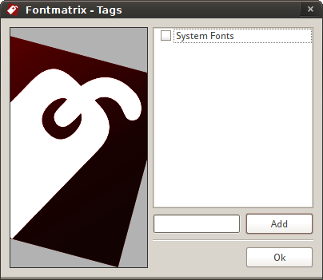
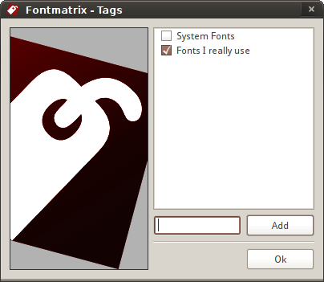
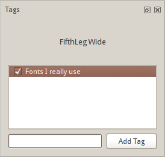

Les étiquettes sont un excellent moyen flexible de gérer votre collection de polices, car elles n'imposent aucune restriction sur la façon dont vous classez les polices. Vous pouvez utiliser des étiquettes comme "Polices que j'ai achetées chez AGFA avant son acquisition" ou "Polices slab serif que ma femme déteste" ou "Fausses polices italiques que je n'utiliserais même pas pour ma propre mère" ou "Polices que j'ai conçues pour NOM_DE_LA_SOCIÉTÉ" ou "Polices texte serif à fort contraste que j'ai le droit d'intégrer".
Il existe deux façons d'ajouter de nouvelles étiquettes.
La première est lorsque vous ajoutez un répertoire contenant des polices (et que l'option Demander les noms d'étiquettes lors de l'importation de polices dans les Préférences est activée). Vous verrez apparaître cette boîte de dialogue :

Cette boîte de dialogue liste donc toutes les étiquettes que Fontmatrix connaît et vous permet d'en choisir une et/ou d'en ajouter une nouvelle. Pour cette dernière, entrez simplement le nom d'une nouvelle étiquette et cliquez sur le bouton Ajouter. L'étiquette nouvellement créée sera automatiquement utilisée pour les polices que vous êtes sur le point d'importer :

Plus tard, lorsque vous sélectionnerez une police qui a une étiquette personnalisée (c'est-à-dire créée par vous), le panneau Étiquettes affichera cette étiquette :

Si vous souhaitez attribuer un certain nombre d'étiquettes aux polices actuellement filtrées, utilisez la commande Éditer > Étiqueter toutes les polices filtrées.... Cela ouvrira la boîte de dialogue qui vous est déjà familière.
Un clic droit sur une étiquette dans le panneau Étiquettes permet de l'éditer ou de la supprimer de la base de données.